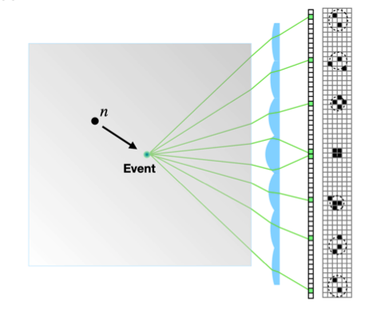
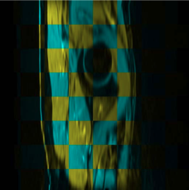
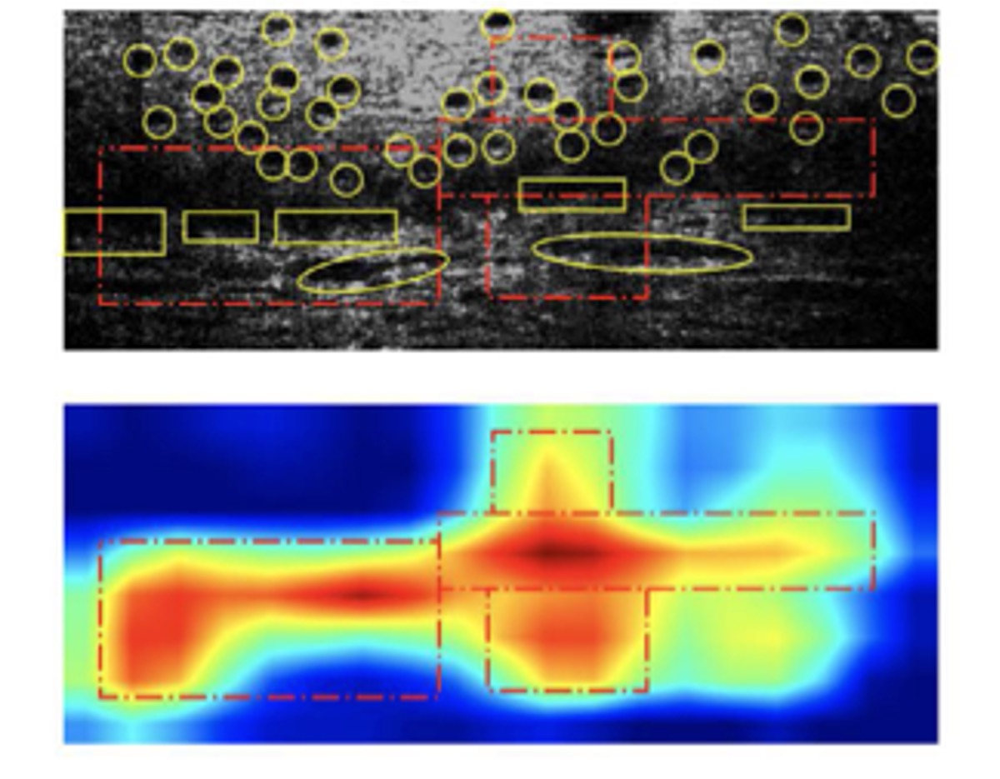
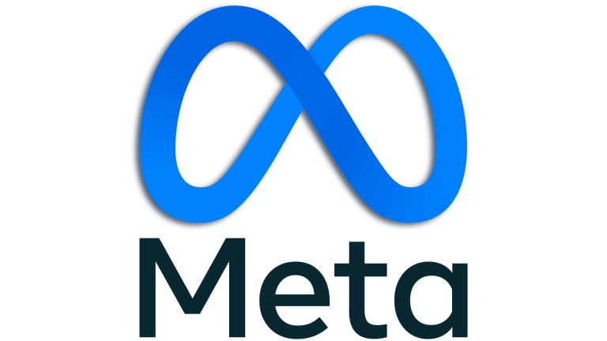

About Me
I am a Ph.D. candidate at UC San Diego, advised by Nick Antipa . My research lies at the intersection of optics and image processing , focusing on physics-informed algorithm design for computational imaging systems. My work includes differentiable optics simulation , as well as applications in computational photography and medical imaging . I've interned at Meta Reality Labs (Mentor: Frank Qian ) and MediaTek (Mentor: Yu-Hao Huang ). Before joining UCSD, I completed my B.S. in Electrical Engineering at National Taiwan University in 2019, advised by Homer Chen .
News
August 2026 — Our 2DIR work was accepted by Optics Express .2026 — Our end-to-end computational camera optimization work appears at SPIE Optics + Photonics.July 2026 — Our PRISM paper on plenoptic scintillation imaging was posted on arXiv.2025 — Our differentiable wave optics paper appeared at ICCV.
Publications
All papers
Highlighted

Plenoptic imaging of particle interactions in scintillation detectors
Xiang Dai, Chi-Jui Ho, Kevin Tandi, Chang Lee, Alex Bocchieri, David Parra, Forrest Peterson, Talha Sultan, Felicia Sutanto, Andreas Velten, Jingke Xu, Nicholas Antipa
arXiv preprint, 2026
[arXiv]

An Unsupervised Learning Approach to 3D Rectal MRI Volume Registration
Chi-Jui Ho, Soan T. M. Duong, Yiqian Wang, Chanh D. Tr. Nguyen, Bieu Q. Bui, Steven Q. H. Truong, Truong Nguyen, and Cheolhong An
IEEE Access, vol. 10, pp. 87650–87660, 2022
[PDF]

Detecting mouse squamous cell carcinoma from submicron full-field optical coherence tomography images by deep learning
Chi-Jui Ho, Manuel Calderon-Delgado, Chin-Cheng Chan, Ming-Yi Lin, Jeng-Wei Tjiu, Sheng-Lung Huang, and Homer H. Chen
Journal of Biophotonics, vol. 14, no. 1, e202000271, 2021
[PDF]
Highlighted paper
Working Experience

Research Scientist Intern Meta Reality Labs, Eye Tracking Research Jun. 2024 - Sep. 2024
Summer Intern MediaTek Jul. 2018 - Aug. 2018
Personal Blog and Notes
I occasionally write about research, computational imaging, and other interests on my blog (In Traditional Chinese).What is computational imaging (original: Computational Imaging 搞什麼鬼)
Summary of the physical meanings of t₁, t₂, t₃ in 2DIR three-pulse experiments (original: 2DIR 三脈衝中 t₁, t₂, t₃ 的物理意義整理
Contact
Email: chh009@ucsd.edu
Last updated: August 2026 • Template inspired by Jon Barron